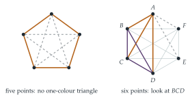

STEP I 1989, Question 4
Read the question before you go on. It is in the STEP Support Programme’s question database: step.maths.org/questions/89-s1-q4
The hook
At any party of six people, there are either three who all know each other or three who are all strangers to each other. This is guaranteed, whoever the six people are. With five people it is not guaranteed. This little fact is the first case of Ramsey’s theorem, and it captures a principle that runs through modern combinatorics: complete disorder is impossible. Any sufficiently large structure, however it is coloured or arranged, must contain a highly ordered piece.
The proof takes four lines. But the obvious next question (how many people guarantee four mutual friends or four mutual strangers? Five?) leads to some of the hardest open problems in mathematics.
Before you start
The six points matter only through which pairs are joined by which colour: the geometry is a distraction. How many segments are there, and how many leave each point?
There are \(\binom{6}{2} = 15\) segments, and \(5\) leave each point. (The general-position condition just makes sure every three points form a genuine triangle. The problem is really about the complete graph on six vertices, \(K_6\), with its edges coloured in two colours.)
Working it through
Stage 1 Five segments, two colours
Five segments leave \(A\), each gold or silver. What can you say for certain about their colours?
At least three of them have the same colour. If at most two were gold and at most two silver, there would be at most four segments. This is the pigeonhole principle: five objects in two boxes put at least three in one box. Say (swapping the names of the colours if necessary) that \(AB\), \(AC\) and \(AD\) are all gold.
Stage 2 Look at the far ends
Now look at the triangle \(BCD\). What happens if any one of its sides is gold? What if none of them is?
If any side of triangle \(BCD\) is gold, say \(BC\), then \(ABC\) has all three sides gold: \(AB\), \(AC\) and \(BC\). If no side of \(BCD\) is gold, then \(BC\), \(CD\) and \(DB\) are all silver, and \(BCD\) is a silver triangle. Either way there is a one-colour triangle (Figure 9.2.1, right).■
Stage 3 Five points are not enough
With five points, each point has only four segments. How might you colour them so that each point has exactly two of each colour?
Place the five points as a regular pentagon (lifting them slightly off a plane if you want general position). Colour the five sides of the pentagon gold and the five diagonals silver (Figure 9.2.1, left). The gold edges form a five-cycle, which contains no triangle; the silver edges form a pentagram, which is also a five-cycle and contains no triangle. So there is no one-colour triangle.■

Looking back
Strip away the irrelevant. The points in space became a coloured graph; only the colours of the edges mattered.
Pigeonhole. Five edges and two colours forced three of one colour.
Case analysis on the right object. Once three gold edges were found, the triangle at their far ends settled everything.
Sharpness. The pentagon shows the number six cannot be lowered. A good theorem comes with an example showing it is best possible.
What’s really going on
Ramsey numbers
The Ramsey number \(R(s, t)\) is the smallest \(N\) such that every colouring of the edges of \(K_N\) in gold and silver contains either a gold \(K_s\) (a set of \(s\) points with all edges between them gold) or a silver \(K_t\). The question has shown that \(R(3, 3) = 6\): six points always work, and the pentagon shows five do not.
Frank Ramsey proved in 1928 that these numbers always exist: for every \(s\) and \(t\) there is some \(N\) that works. The proof is an induction that generalises the argument above, and shows \(R(s, t) \leq R(s - 1, t) + R(s, t - 1)\). But exact values are extraordinarily hard to find: \[R(3, 3) = 6, \qquad R(4, 4) = 18, \qquad 43 \leq R(5, 5) \leq 46.\] The value of \(R(4, 4)\) was found in 1955. Despite enormous computer searches, \(R(5, 5)\) is still unknown; the upper bound of \(46\) was proved only in 2024. A computer cannot simply check every colouring of \(K_{43}\): there are \(2^{903}\) of them, far more than the number of atoms in the universe.
Paul Erdős, who did more than anyone to develop Ramsey theory, liked to tell this story. Suppose aliens invade the Earth and threaten to destroy it unless we tell them the value of \(R(5, 5)\). We should marshal all our computers and mathematicians, and we might find it. But if they asked for \(R(6, 6)\), we should try to destroy the aliens. Erdős also proved, in 1947, that \(R(k, k) > 2^{k/2}\), using a startling method: he showed that a randomly coloured graph on fewer than \(2^{k/2}\) points has a positive probability of containing no one-colour \(K_k\), so a good colouring must exist, even though nobody knows how to construct one. This probabilistic method is now one of the most powerful tools in combinatorics.
Order from chaos
Ramsey’s theorem has many relatives, all expressing the same idea: large enough structures cannot avoid order. Van der Waerden’s theorem says that if the whole numbers are coloured with finitely many colours, there are arbitrarily long arithmetic progressions of one colour. The Erdős–Szekeres theorem says that any sequence of \(n^2 + 1\) distinct numbers contains an increasing or a decreasing subsequence of length \(n + 1\). And Ramsey himself was interested in a question of logic: he proved his theorem as a lemma in a paper on deciding the truth of logical statements.
The thinking skill
If more than \(kn\) objects are placed in \(n\) boxes, some box contains more than \(k\) objects.
The principle is obvious, but using it well is an art: the skill is in choosing what the objects and boxes should be. Here they were the five edges at one point and the two colours. At university, pigeonhole arguments appear in number theory (approximating irrationals by fractions), in analysis (the Bolzano–Weierstrass theorem) and throughout combinatorics.
Try this next
At least two. Show that in any two-colouring of \(K_6\) there are in fact at least two one-colour triangles. (Hint: count the “bichromatic angles”: pairs of edges of different colours at a common vertex. A point with \(g\) gold and \(5 - g\) silver edges is at the apex of \(g(5 - g) \leq 6\) such angles. Each triangle that is not one-colour contains exactly two.)
Three colours. If the edges of \(K_{17}\) are coloured in three colours, show that there is a one-colour triangle. (Hint: one point has at least six edges of one colour.)
Three or four. Show that \(R(3, 4) \leq 10\): in any gold/silver colouring of \(K_{10}\) there is a gold triangle or a silver \(K_4\). (Hint: a point has either at least \(4\) gold edges or at least \(6\) silver edges.) In fact \(R(3, 4) = 9\).
Monotone subsequences. Prove the Erdős–Szekeres theorem for \(n = 2\): any sequence of \(5\) distinct numbers contains an increasing or decreasing subsequence of length \(3\). Find a sequence of \(4\) with neither.
Further reading
Miklós Bóna, A Walk Through Combinatorics (World Scientific), the chapters on the pigeonhole principle and Ramsey theory.
Ronald Graham & Joel Spencer, “Ramsey theory”, Scientific American (July 1990). A popular introduction by two leading researchers.
Noga Alon & Joel Spencer, The Probabilistic Method (Wiley). The standard book on Erdős’s method; the first chapter is accessible.
Paul Hoffman, The Man Who Loved Only Numbers (Fourth Estate). A biography of Erdős.